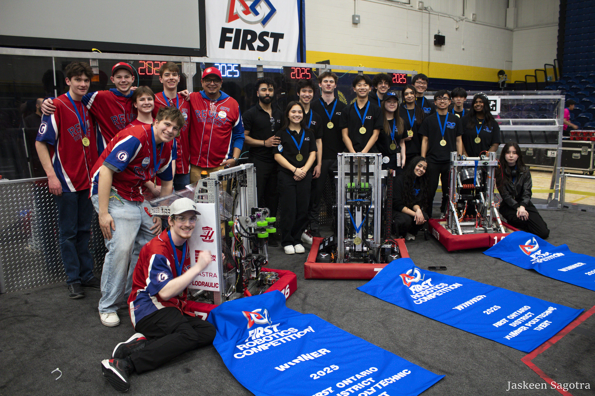
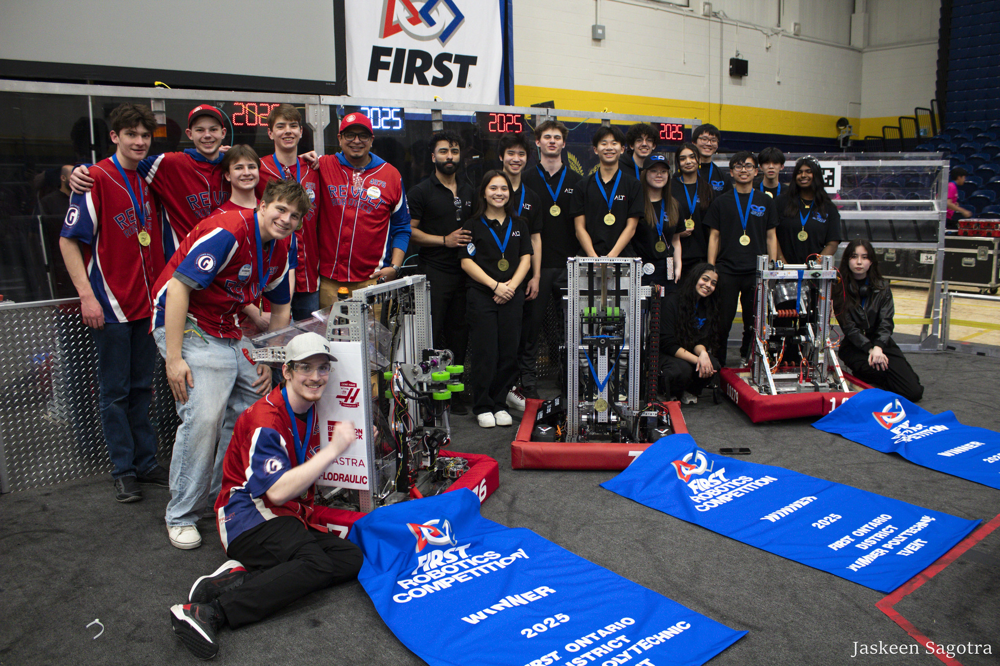

Whether it be for university applications, scholarships, or resumés,
having experience with FIRST can be incredibly helpful. It can show
your dedication to STEM (Science, Technology, Engineering, and
Mathematics) education.
Real and Practical Hands-On Experience:
With FIRST robotics you able to learn and devlop hard-skills you will
be using in the future. For example, learning to CAD, program a robot,
use tools for soldering and much more.
Develop Soft-Skills:
Aside from hard-skills, you would also be building your soft-skills
like communication, interpersonal, critical-thinking, and problem-solving
skills. While you work in your individual subteams to support the team as
a whole, you learn to work with your teammates while building lasting
bonds.
Networking:
Speaking of lasting bonds, at FIRST events you meet and work with people
who are either interesting in working in the STEM industry or professionals
who have already established themselves. These event are perfect for
learning more about your interests and building your networks.
Business:
For those who lean more towards business and commerce, don't worry the
Erudites also has a place for you! With our business subteam you can learn
how to manage a small business, its finances, managing social media
platforms, and much more. Without our business members we would not be
able to support our hardware and software subteams, so we are always
grateful for our business team!
It's Fun!!!:
Although FIRST may seem intimidating at first, the Erudites are here to
support you along the way! We may be biased here but we truly believe
that FIRST is something worth experiencing. With all the obstacles we are
able to learn, grow, and make friends along the way.
 
